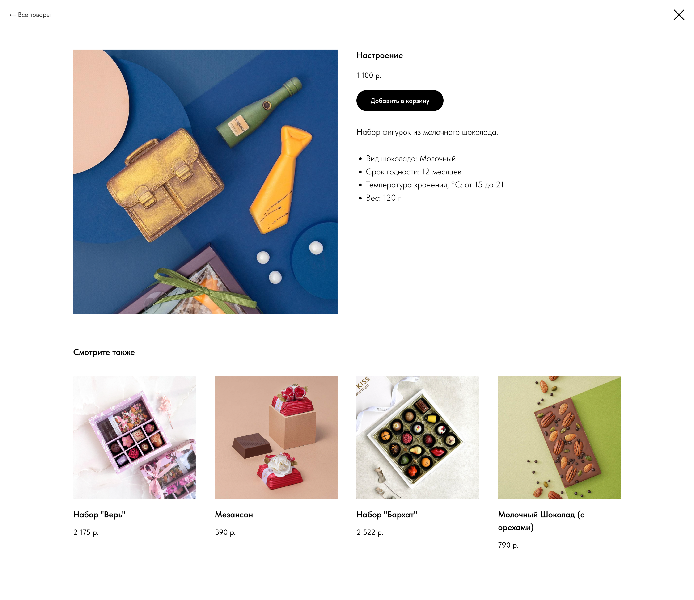
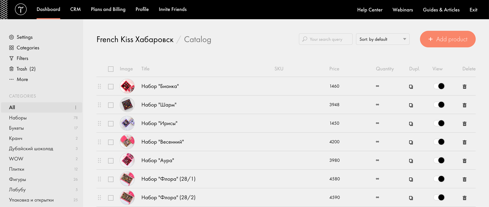
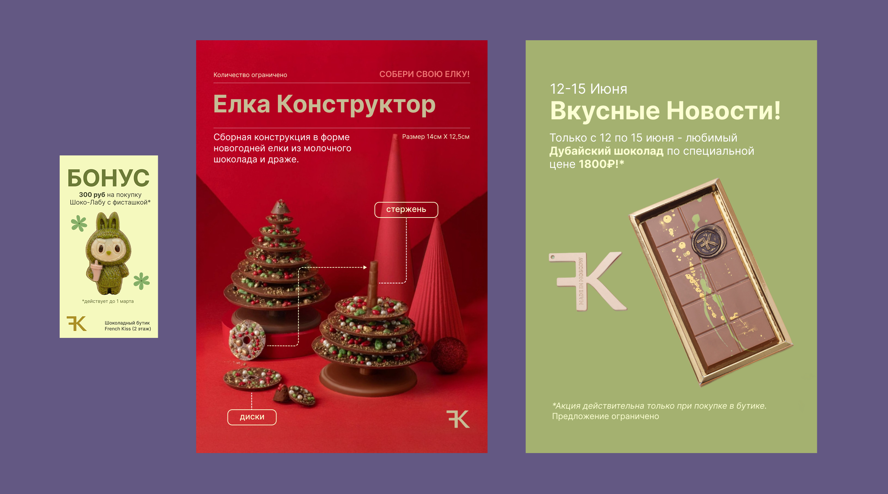
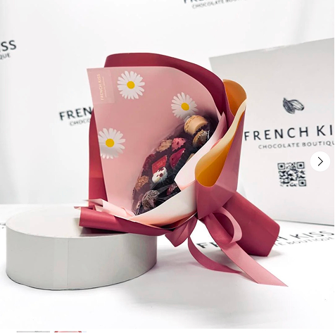
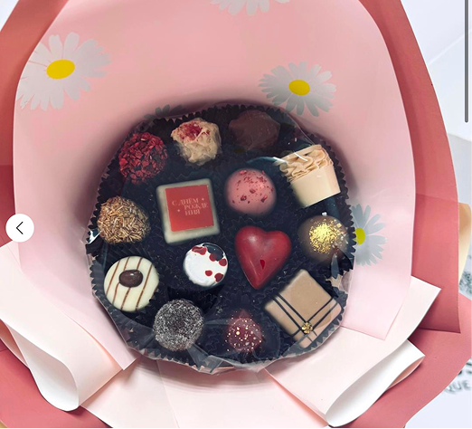
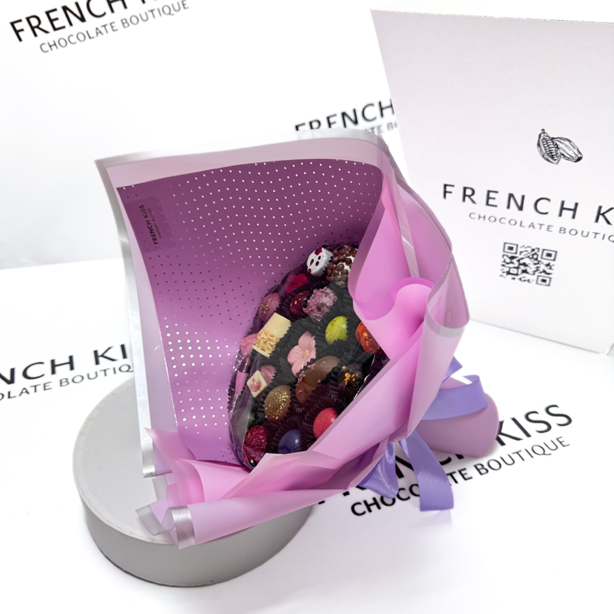
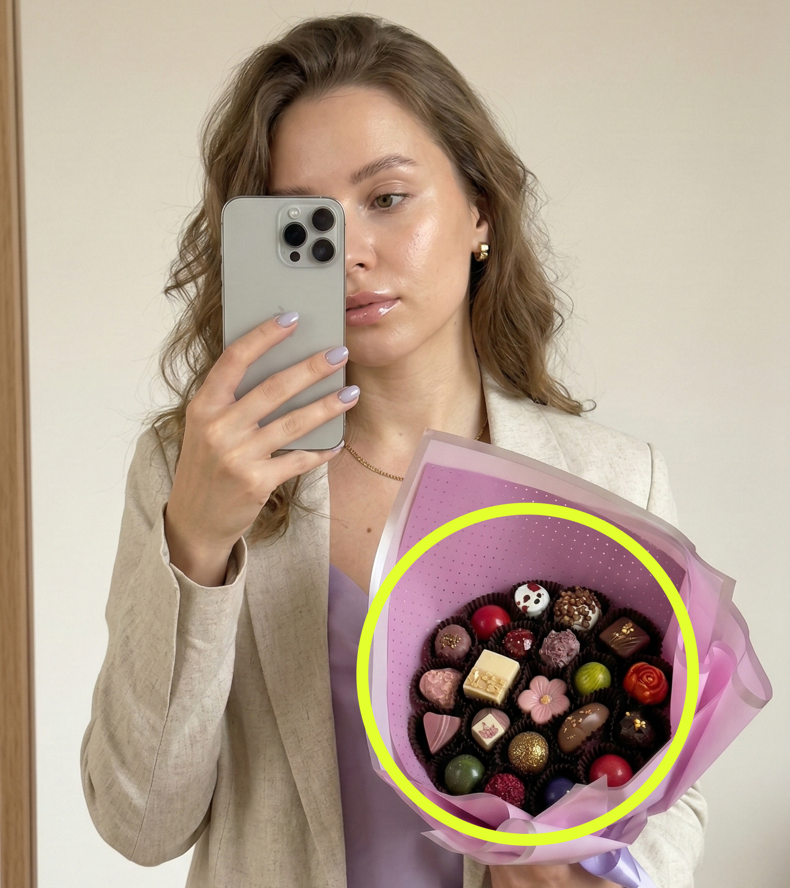
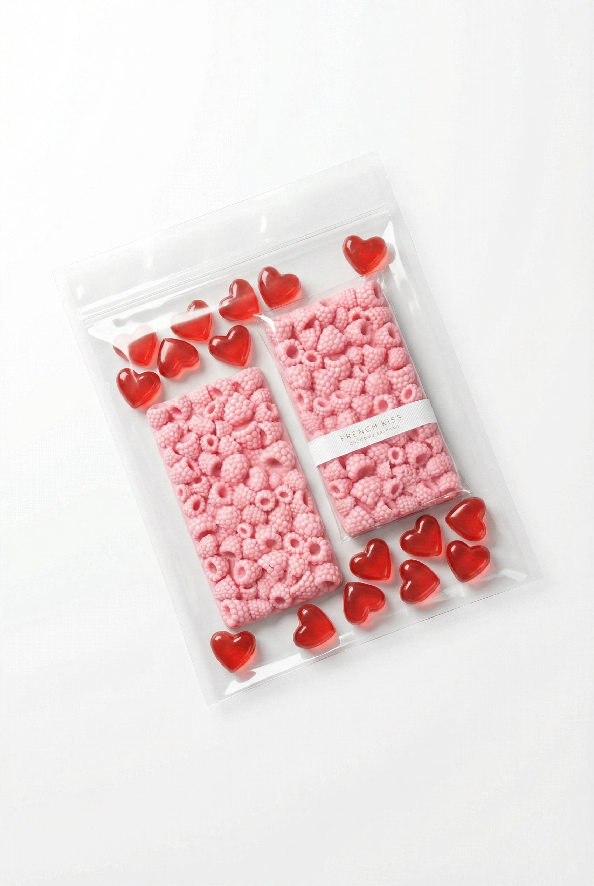
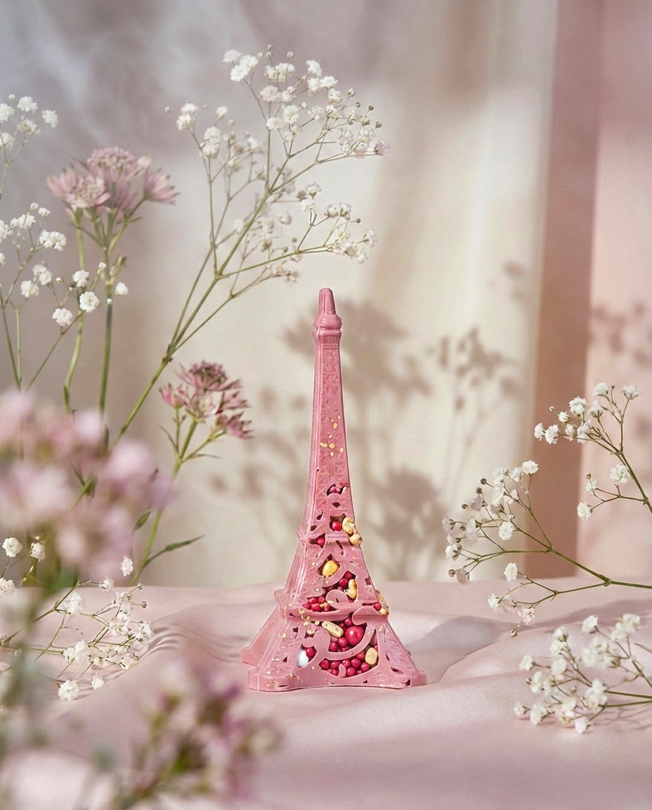
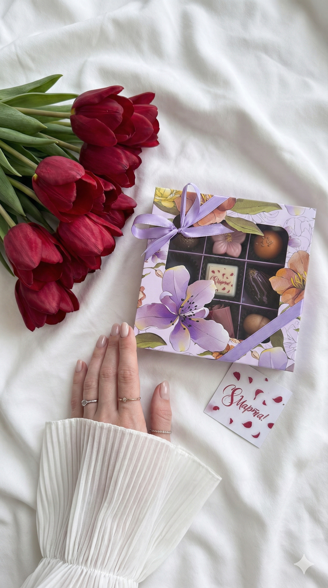

Overview
French Kiss Chocolate Boutique is a premium confectionery brand headquartered in Moscow, Russia. My family operates a local franchise in my hometown (Khabarovsk), where retail operations are handled on-site. I remotely manage the business's digital presence, including the e-commerce website, product catalog management, and social media marketing.
Building the website and e-commerce business infrastructure
I designed and launched a CMS-based e-commerce website using Tilda, choosing the platform strategically due to limited resources and compatibility with Russian payment systems.

The website is fully functional and includes domain setup and DNS configuration, hosting configuration, integration of the Russian payment system YooKassa, a complete cart and checkout flow, and automated order confirmation emails. It features a Russian-language interface tailored to the primary audience. Customers can browse collections, add products to their cart, complete payments online, and receive confirmation emails. The site also supports seasonal campaigns and collection-based merchandising.
Product inventory management
I manage the digital catalog and merchandising system, including uploading new products, editing and optimizing product images, updating pricing and availability, and creating curated seasonal collections (e.g., International Women’s Day, New Year, and Valentine’s Day). This role requires aligning inventory between the physical retail store and online availability while maintaining visual consistency across the platform.

Marketing services for print and digital
I oversee both print and digital brand execution. On the print side, this includes designing posters, price labels, and in-store promotional materials, ensuring alignment between physical retail branding and digital campaigns.
On the digital side, I manage primary channels including Instagram (9,000+ followers) and Telegram (90+ followers, recently launched). My responsibilities include art direction, photo and video editing, campaign planning, Russian-language caption writing, maintaining a visual consistency system, and AI-assisted content production.

Working with AI-assisted content
To stay up to date with current social media trends and increase creative output while maintaining quality, I developed a structured AI-assisted visual production pipeline.
Process
- Source visual references from Pinterest. Perform targeted research aligned with the campaign objective, whether thematic such as seasonal or mood-driven, or product-focused, evaluating composition, colour palette, lighting, and styling to ensure consistency with the brand direction.
- Describe references to ChatGPT to develop structured prompts. Define subject, environment, lighting conditions, colour tones, mood, camera angle, proportions, and any product constraints to ensure clarity and control in generation.
- Generate images using tailored prompts for Gemini (Nana Banana).
- Reiterate visuals as needed and manually refine prompt text to improve accuracy and composition.
- Once satisfied with the images, animate them using Gemini once again in a separate thread.
- Edit final videos in external tools such as InShot and CapCut.
- Finally, add music and optimize content for platform-specific formats (Reels, Stories).
Working example of the process
I will walk you through one example. First, I gathered visual references with the goal of creating a natural-looking image of a model holding a bouquet. Since I prefer AI-generated content to appear as realistic as possible, I decided to use a selfie-style format to enhance authenticity and reduce the overly polished aesthetic often associated with AI visuals. I will not include the referenced images in this documentation, as they may be subject to copyright.
Prompt Example
Ultra-realistic mirror selfie of a young woman holding a large bouquet made entirely of chocolate (reference image of chocolate bouquet will be provided). iPhone partially covering her face, natural candid pose. Soft indoor lighting, minimal neutral background (beige / warm off-white wall), clean aesthetic, no clutter. Outfit soft and elegant (oversized pastel shirt, light blazer, or delicate striped shirt), natural loose hair, subtle makeup, manicured nails, minimal jewelry. The bouquet must exactly match the provided chocolate reference — same composition, chocolate pieces, shapes, wrapping, colours, proportions. It should clearly look like chocolate. Keep realistic size relative to the body — not oversized, not tiny. Stems/support structure visible only if present in reference. Pose: one arm supporting bouquet from below, other hand holding phone in front of face. Vertical composition 4:5 or 9:16. Soft spring mood, airy, slightly romantic but minimal. Do NOT redesign the bouquet. Maintain accurate proportions and scale. No extra objects, no text, no distortion.
Then I used this prompt along with images of the product to generate the desired visual of a model holding the bouquet. It was important to provide both the bouquet structure and chocolates close-up, because without the second image, Nana Banana tends to generate its own version of the chocolates based only on visible cues.




Once I finalized the static version, I used the following prompt to animate it in Nana Banana:
Create a realistic 4–5 second vertical animation from this image. The woman slowly transitions from a neutral expression into a soft, natural closed-lip smile. The smile should be subtle and elegant, not exaggerated. Add one gentle blink during the transition. Very slight cheek lift and softening around the eyes. Keep face proportions identical. No morphing, no beauty filter, no distortion. Chocolate bouquet and phone remain perfectly still and unchanged. Natural daylight, realistic skin texture. Seamless loop.
Other examples of AI-generated content



Reflection
At first, I wasn’t sure if I should include this project in my portfolio as it’s not a "traditional" design case study. Nevertheless, it’s real work, with real impact - and it taught me a lot. More importantly, it became something personal. Being physically far from my family, working on this together allowed me to stay involved in something we share. It made the distance feel smaller :)
Working with AI tools made the process even more interesting and challenging at the same time. Trends change fast, and staying relevant requires consistent learning, exploration, and experimentation. I also quite enjoy peeking around other Instagram accounts to see what other local businesses are up to. Even though I shifted my career focus from marketing to design, I still genuinely enjoy branding and social media. I understand how they connect to user experience, business goals, and communication strategy.